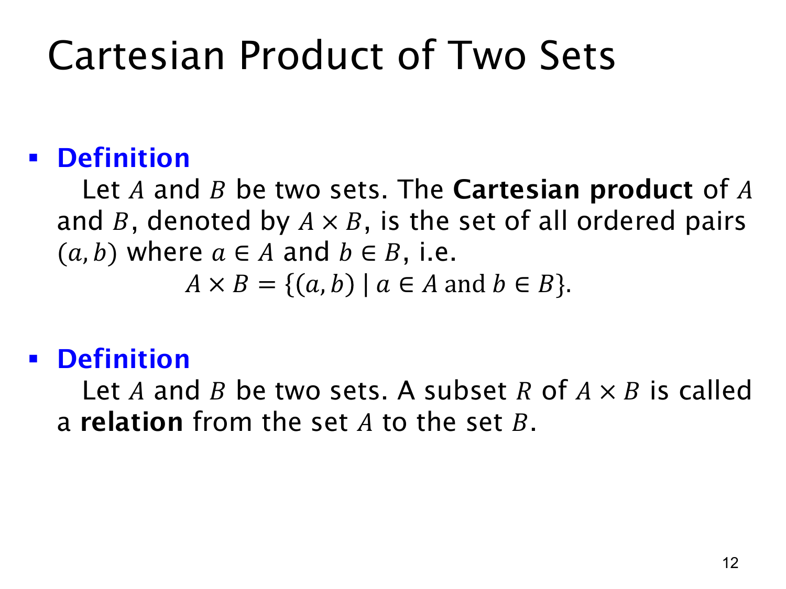

L1.4 · 第 12 页讲解原文
查看这一页课件

笛卡尔积与关系
给定集合 A,B，它们的笛卡尔积（Cartesian product）A×B 是所有满足“第一项来自 A、第二项来自 B”的有序对组成的集合：
A×B={(a,b)∣a∈A 且 b∈B}.
例如 A={1,2}、B={x,y} 时，A×B={(1,x),(1,y),(2,x),(2,y)}。有序对的位置不能交换；(1,x) 属于 A×B，而 (x,1) 通常属于 B×A，不属于 A×B。因此笛卡尔积一般不满足交换律 A×B=B×A。
若 A 或 B 是空集，就无法选出完整的有序对，所以 A×∅=∅，∅×B=∅。若 A,B 有限且分别有 m,n 个元素，则每个第一项有 n 种第二项可搭配，总共有 mn 个有序对，即 ∣A×B∣=∣A∣∣B∣。
本页还定义从 A 到 B 的一个关系（relation）为 A×B 的任意子集 R。它只挑选部分有序对来表示哪些 a∈A 与哪些 b∈B 有关系。例如在上述集合中，R={(1,x),(2,y)} 是一个关系。关系可以是空集，也可以是整个 A×B；它尚不要求每个 a 恰好对应一个 b，那是后面“函数”所增加的限制。